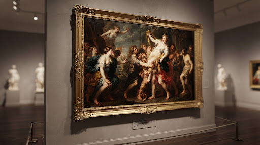

A JOURNEY THROUGH ART
Trace five centuries of stylistic revolutions from Renaissance humanism to contemporary digital expressions.
ERA: 1300 – 1600
The Renaissance
A intense revival of Classical antiquity, linear perspective, mathematical proportion, humanism, and anatomical precision centered in Florence, Venice, and Rome.
STYLISTIC HALLMARKS
- Linear & Aerial Perspective
- Humanist Idealism
- Chiaroscuro & Sfumato
- Mythological & Sacred Themes

Portrait of a Nobleman
Sandro Botticelli
ERA: 1600 – 1750
The Baroque Era
An era characterized by exaggerated motion, theatrical light contrasts (tenebrism), rich emotional intensity, and grand architectural grandeur across Catholic Europe.
STYLISTIC HALLMARKS
- Dramatic Tenebrism
- Theatrical Movement
- Sumptuous Texture & Reflection
- Sensory Realism

Still Life with Silver Goblet
Willem Kalf

The Fall of Phaeton
Peter Paul Rubens
The Calling of Saint Matthew
Caravaggio
Girl with a Pearl Earring
Johannes Vermeer
ERA: 1865 – 1910
Impressionism & Post-Impressionism
A revolutionary break from academic studio conventions, focusing on immediate visual impressions of light, vibrant unmixed color, open-air painting, and subjective emotion.
STYLISTIC HALLMARKS
- Linear & Aerial Perspective
- Humanist Idealism
- Chiaroscuro & Sfumato
- Mythological & Sacred Themes
Portrait of a Nobleman
Sandro Botticelli

Portrait of a Nobleman
Sandro Botticelli
ERA: 1910 – 1970
Modernism & Abstraction
A period of radical experimentation discarding realistic representation in favor of pure form, geometric equilibrium, surrealism, and kinetic sculpture.
STYLISTIC HALLMARKS
- Linear & Aerial Perspective
- Humanist Idealism
- Chiaroscuro & Sfumato
- Mythological & Sacred Themes
Portrait of a Nobleman
Sandro Botticelli
Portrait of a Nobleman
Sandro Botticelli
ERA: 1970 – present
Contemporary & Digital Era
Pluralistic art defying single definitions, embracing site-specific light installations, generative code, conceptual installations, and global dialogue.
STYLISTIC HALLMARKS
- Linear & Aerial Perspective
- Humanist Idealism
- Chiaroscuro & Sfumato
- Mythological & Sacred Themes
Portrait of a Nobleman
Sandro Botticelli